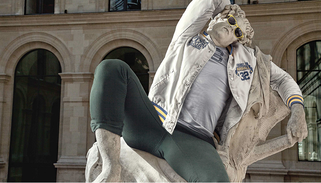

Hello, I’m Mehmet Akif.
A senior-year design student who trying to specialize in 3D modeling & texturing.
-

01 / STREET STONE
Street concept digital sculpture with human-like skin. Learned a lot of quick tips and look development.
Sculpted in ZBrush, Retopologized and UVs done in Maya, Textured in Mari, Rendered using Arnold.
More shots from this project ↗
02 / CELL-HOUDINI SOLO WORK
Apart from the CG part, the most difficult part to deal with is actually the overall tone, and it is rare to see this large area and bright red as the main color in the beauty makeup, and it rarely appears in the usual work.
It is difficult to render very pure colors in the renderer, requiring later support, and different monitors are also different for the display of such colors, which is a headache.
See case study →
Mehmet Akif Karasu ⏤ 2020